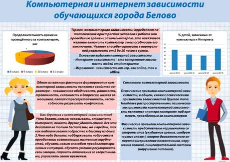

Я сейчас опять умную вещь скажу, вы только не обижайтесь.
Любые попытки задействовать детей в реализации каких-то взрослых чиновничьих планов отвратительны.
Все эти юные помощники гаи, конкурсы молодых огнеборцев, и фестивали логотипов. Всё это ужасная по своей сути имитация деятельности. Эта имитация не просто отвлекает взрослых людей от каких-то их занятий («вы у нас в бухгалтерии работаете? кажется, да»), но и приучает детей с малых лет создавать продукт ради галочки.
В качестве слайдов, «Итоги регионального этапа международного конкурса статистических постеров среди школьников».

Работа победителей, которые получили дипломы «и возможность представлять Кемеровскую область на всероссийском уровне»
Сын не принимает участия в таком, с тех пор, как им пришлось ещё по одному кругу разыгрывать сценку по безопасности дорожного движения потому что в ГИБДД забыли привезти видеокамеру.